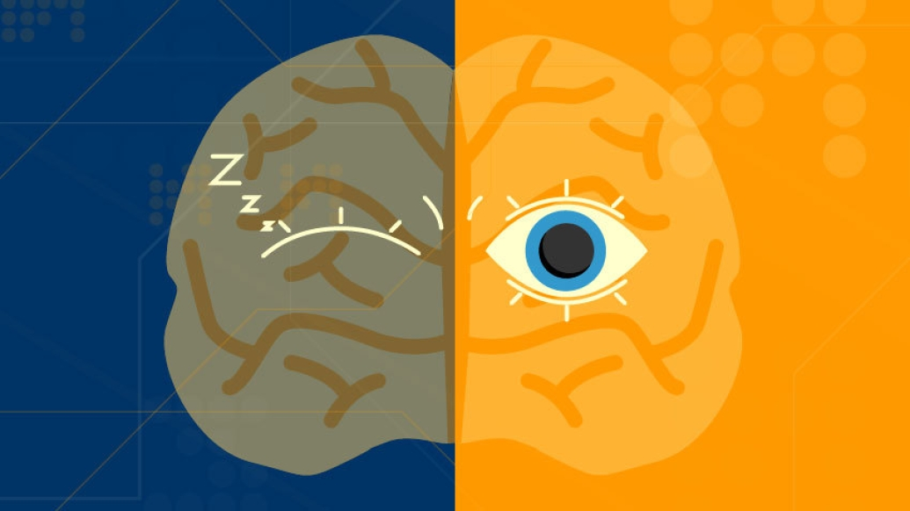

What Is N1?
N1 or NREM 1 stands for non-rapid eye movement and as the name suggest your eyes aren't moving as fast since your are not in a deeper stage of sleep. This is the lightest stage and it last about 5 mins. When your in this stage you're probably still tossing and turn in your bed. In this stage your still practically awake and will get up from the slightest noises and sounds. This stage acts as the body's connection to the other stages of sleep. It is also responsible for the "falling" dreams sense this is your body's sleep and awake stage. The N1 sleep makes up only 5% or your sleep cycle.
First
Your body starts to calm down. This is the first step of your brain's sleep rutine. This is where it tells your body to calm down and relax. At this point your still mostly awake and can hear most sounds.
Then
You'll start to feel hazy and heavy. Your body start to stiffen and your mind is drifting off. Your body might do sudden twiches and your self soothing system comes into play.
Finally
Our body futher relaxes and the muscles will loosen. Our overall concisness will start to drift and you will lose some controle over your body. Now the N1 stage will start to go into the N2 stage
Mental System
During this first stage of sleep your brain is sending a bunch of neurotransmitters telling your body when to sleep and when to breath. This system also wakes you up in the morning. This system is know as the Circadian Rhythm. The circadian-rhythm is our body's internal clock and we follow this clock every day. It not only helps us know when to wake up but it also is responsible for our digestion and hormones. The circadian-rhythm coordinates both our mental and physical system. this makes sure that your brain knows what your body is doing and vice versa. without this your whole body will go on shuntdown.
Sleep Stages
Babies & Todlers
Babies don't have a circadian-rhythm when they are in the new born stages. This is why we space their sleep between every 3-4 dollors. They will go through a shorter sleep cycle only going from Active sleep and Quiet sleep. As they get older their sleep cycle gets longer and longer the amount of time they need to sleep goes down. Babies under 1 year old sleep from about 12-17 hours including naps with newborns sleeping more since they don't have a full sleep cycle. Todlers are a different breed. They are going from being a baby to young child and for most they still need a lot of sleep but their sleep cycle is better put together while still developing.
Children & Teens
In your early childhood you still need about 12 hours of sleep from day to day but, overall your body is still going throught some changes as you get ready for school. Our body needs the extra sleep for energy that we use for the day and with young kids they need all the energy for learning new things. Children are developing new skills and most are going to Pre-K or school for the first time. With teens their bodies go through a lot of hormonal changes. A parent might even see their child's sleep increase while they go these changes but typically a teen will sleep about 8-10 hours.
Adults & Elderly
Adluts sleep will stall now because their body will not be going through any more changes untill they reach their Elderly life. They will still need 6-9 hours of sleep daily. It is important to note that adluts do need sometime inbetween work to just have a break you should never feel like you can keep going for hours on end. The elderly will still sleep about 6-9 hours but they might sleep less do to futher hormonal changes in their bodies. They might also have more pain from having stiffer bones and muscles. So be sure to get them a better mattress and pillows!